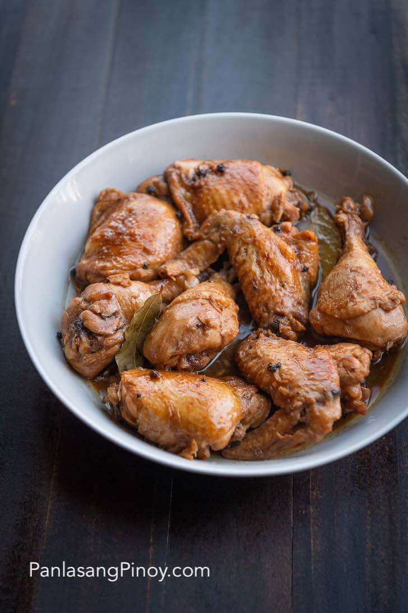

Chicken adobo is a Filipino dish of chicken simmered in soy sauce, vinegar, garlic, whole peppercorns, and bay leaves until the meat is tender and the sauce turns salty and sour. Ask many Filipinos about our food, and adobo usually comes up first. Many people call it the unofficial national dish of the Philippines. The name adobo comes from the Spanish word adobar, which means to marinate. The Spanish gave the dish its name, but Filipinos were already cooking meat in vinegar and salt long before that, mostly to help food last longer before refrigeration was common. Soy sauce became part of many versions later, and that salty and sour taste is how most of us picture Filipino adobo now. Even at home, adobo changes depending on who is cooking. Some like it saucy, some cook it almost dry, and some add coconut milk, potatoes, or a little sugar. If you want to see the different methods side by side, I also have a guide on how to cook adobo that walks through them.